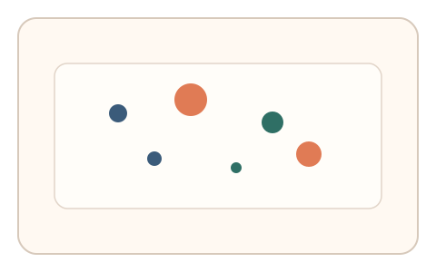
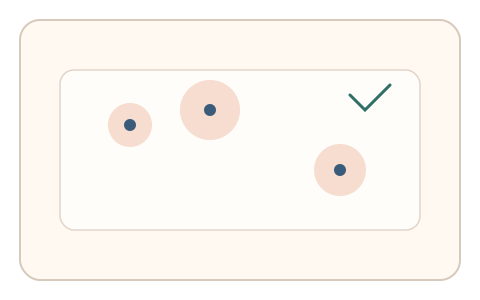

#21
视觉思考范式：空间/结构/直觉
已扩展
视觉显著性共识
让用户点击最显著元素，并以点击顺序与位置是否符合群体显著性分布进行判定。
概念原文
在一组抽象元素中让用户点击“最吸引注意力的 3 个点”，以点击顺序与位置构建个体显著性图。
依赖人类群体趋同的注意力分布，而非单一识别任务。
研究背景
视觉注意力在亮度、对比度、大小等线索驱动下形成相对稳定的显著性分布。利用群体显著性共识，可将注意力指向转化为行为验证信号。
核心机制
- 展示一组抽象元素并形成显著性差异。
- 要求用户快速选择最吸引注意力的 3 个点。
- 记录点击顺序、位置与反应时。
- 与预期显著性分布进行相似度比对。
用户流程
- 步骤 1：用户看到抽象元素排列。
- 步骤 2：用户快速点击 3 个最显著的点。
- 步骤 3：系统计算显著性一致度并判定。
判定信号
点击位置与显著性热点距离
人类注意力倾向聚集在高显著性区域。
点击顺序与显著性排序一致度
显著性更高的目标通常先被注意到。
判定逻辑
计算点击集合与显著性热点的匹配度，并检查点击顺序的合理性；偏离群体分布或顺序随机化判异常。
对抗面
- 脚本调用显著性模型直接选点
- 重放预录点击序列
防御与缓解
- 动态生成元素布局与显著性线索
- 加入微时序与鼠标轨迹特征进行多信号验证
- 在局部引入弱显著性干扰点，观察真实犹豫
可达性与风险
提供高对比和少量元素模式，并允许键盘选择或替代任务，避免对低视力用户不友好。
- 个体差异与色觉差异影响显著性判断
- 过度追求速度可能造成误拒
可视化状态

状态 1：显著性场景
元素在亮度与大小上形成差异。

状态 2：点击选择
点击最显著的 3 个点。

状态 3：显著性判定
对比点击与显著性热点分布。
参考资料
Salience (neuroscience)
说明显著性与注意力机制。
Attention
说明注意力选择的基本机制。